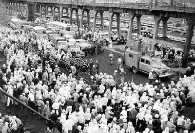
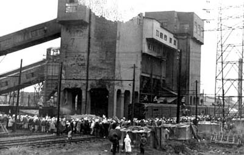
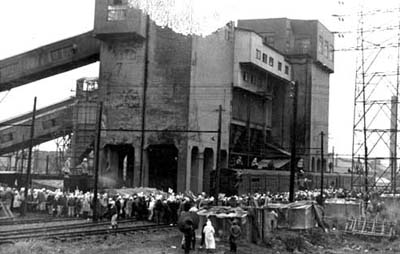

昭和35年7月8日、福岡地裁は、三井鉱山の申請どおり、組合員等のホッパー周辺および港務所 中央指令所への立入禁止仮処分命令を出した。それは、ピケ小屋24棟すべてを24時間以内に除去せよというものであり、労働 者の団結を認めない当時の裁判所の立場を表してもいた。しかし、大量の警察官に守られホッパー周辺への立入禁止仮処分を 執行しようとした執行吏も、三池労組のピケに阻まれ結局退去せざるを得なかった。
 
